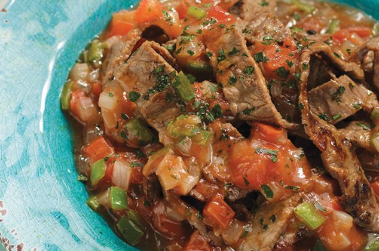

Carne a la mexicana

Preparación
1.- Pasa los cubos de carne por la harina hasta dejarlos impregnados por todos sus lados. De inmediato calienta el aceite en una sartén y acomoda los trozos sin amontonarlos. Cocínalos hasta dorarlos por todos sus lados y se desprendan fácilmente de la sartén sin que se peguen.
2.- Vierte de una vez el vino tinto con el agua caliente y cocina 5 minutos removiendo de vez en cuando a fuego medio hasta espesar los jugos de la preparación. Agrega la cebolla con el pimentón y el choclo, cocina durante otros 5 minutos más hasta cocinar los vegetales. De inmediato agrega los tomates con el ají verde y remueve para distribuir.
3.- Condimenta la preparación con sal y pimienta a gusto, cocina unos minutos más hasta cocer bien todos los ingredientes. Finalmente retira del fuego y agrega la crema NESTLÉ® y revuelve hasta integrarla en toda la preparación. Una vez lista, sirve cuando gustes acompañada de arroz blanco o puré de papas MAGGI®.
Lomo de cerdo

Paso 1
Pelar las manzanas, cortarlas en dados y saltearlos en una sartén con aceite. Añadir la cebolla picada, sofreírla un par de minutos y agregar las nueces troceadas, unas hojas de romero y la miel. Rehogar hasta que la mezcla esté un poco caramelizada y salpimentar. Abrir el lomo de cerdo a lo largo.
Paso 2
Extender bien el lomo, salarlo y condimentarlo con una pizca de pimienta recién molida. Colocar el relleno de manzana a lo largo de uno de los lados de la carne y enrollarla sobre sí misma para formar el rollo, procurando que el relleno quede centrado y repartido de manera uniforme en toda la pieza.
Paso 3
Atar el rollo y dorarlo en una sartén con aceite. Colocarlo en una fuente refractaria, salpimentar y añadir la sidra, romero, la mantequilla en daditos y el zumo del limón. Hornear 45 minutos a 180°. Retirar, colar el jugo y espesarlo con maicena. Servir la carne espolvoreada con escamas de sal y romero picado.
Pollo en salsa
1 kg de pollo cortado en trozos, y si quieres un plus de sabor lo mejor es que sea campero. Pide en la carnicería que te lo corten.
2 dientes de ajo.
1 cebolla.
1 puerro.
3-4 zanahorias.
Agua, la cantidad que necesites para prácticamente cubrir los ingredientes en la olla. Yo he necesitado 400 ml.
150 ml de vino blanco.
Aromatiza con una ramita de romero o de tomillo (si no tienes frescas puedes utilizarlas secas) o de alguna especia que te guste. Yo he añadido 2 cucharadas soperas de salsa de soja que le da un sabor fantástico aunque se salga de lo tradicional.
1 cucharada sopera de harina fina de maíz o maicena.
6 patatas de tamaño mediano.
Aceite de oliva, sal y pimienta negra recién molida.